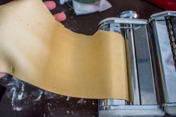
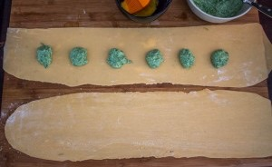
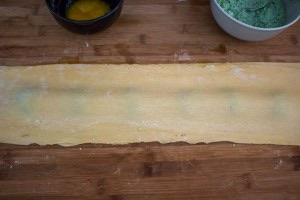
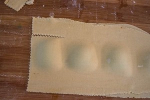
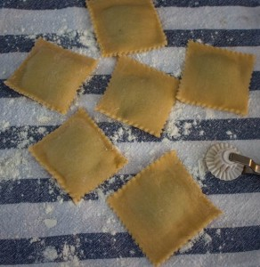
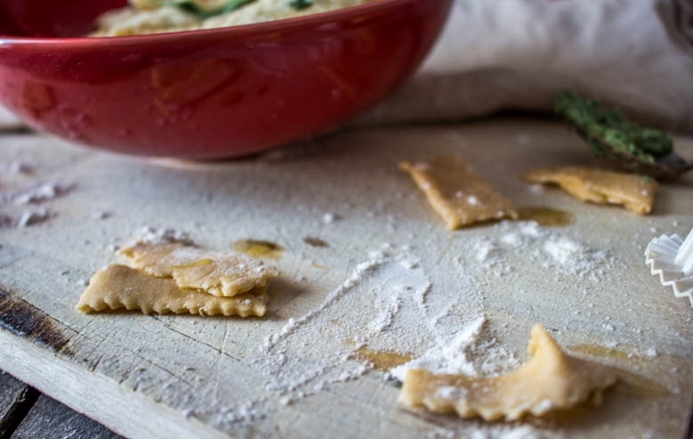
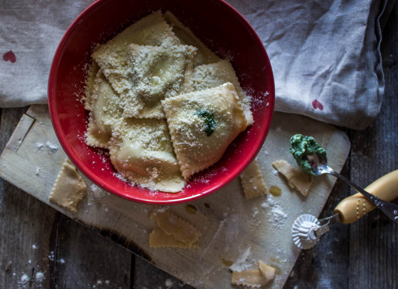

Raviolis ricotta épinard parmesan #homemade

Aujourd’hui on se retrouve pour un grand classique de la cuisine italienne : les raviolis « di magro ».
Comme vous le savez, en ce moment je me fais régulièrement des green smoothie (recette ici) et il me restait des épinards sur les bras. J’ai donc eu l’idée de faire des raviolis mais pas n’importe lesquels! En effet, j’ai décidé de faire des raviolis « di magro ». Pour la petite histoire, « di magro » signifie maigre et dans notre recette « sans viande ». En effet, ces raviolis étaient notamment préparés pendant le carême en Italie en remplaçant la viande par de la ricotta et des épinards.
Je fais très régulièrement des pâtes maison et bizarrement un peu moins de raviolis car il faut dire que cela prend un peu plus de temps, mais honnêtement ça en vaut vraiment le coup car c’est un vrai délice et vous ne pourrez plus vous en passer! Traditionnellement, les ravioli ricotta épinards sont servis dans une sauce tomate ou avec du beurre de sauge. J’ai décidé de faire ceux au beurre de sauge car je les trouve bien meilleurs mais ça c’est une histoire de goûts!
J’espère que cette recette vous plaira et vous inspirera! Maintenant, place à la recette!
Ingrédients
- Farine - 300gr
- Oeufs à temperature ambiante - 3
- Sel - 1 pincée
- Epinards - 250gr
- Ricotta - 120gr
- Parmesan - 80gr
- Jaune d'oeuf - 1
- Beurre doux - 100gr
- Sauge - 5 brins
- Parmesan - 50gr
Instructions
- Dans une jatte très large, dans votre robot ou encore directement sur votre plan de travail, verser la farine
- Faire un puit au centre
- Battre rapidement les œufs dans un bol
- Verser les œufs au centre du puit
- A l'aide d'une fourchette mélanger les œufs tout en ramenant petit à petit de la farine
- Continuez ainsi jusqu’à épuisement de la farine
- Continuer à la main de manière à obtenir une boule de pâte bien homogène
- Laisser reposer au frais au moins 30min dans du cellophane
- Faire cuire les épinards dans un grand volume d'eau bouillante salée
- Égoutter et essorer-les au maximum
- Hacher les épinards
- Mélanger la ricotta, les épinards, le parmesan et un jaune d’œuf
- Réserver
- Une fois la pâte prête, séparer la en 3 ou 4
- Passer la pâte au laminoir en la passant plusieurs fois sur les mêmes crans pour avoir une pâte bien lisse
- Personnellement je préfère quand les pâtes ne sont pas trop trop fines alors je m’arrête au cran 6
- Si vous n'avez pas de machines à pâtes vous pouvez travailler la pâte au rouleau (c'est un peu plus long)
- Étaler une première feuille de pâte sur votre plan de travail
- Déposer des boules de farces sur la pâte en les espaçant les unes des autres
- Poser par dessus une autre feuille de pâte
- A l'aide de vos mains souder les deux pâtes entre elles ce qui permettra également d’éliminer l'air
- Découper les raviolis de la forme que vous souhaitez
- Continuer ainsi de suite jusqu’à épuisement total votre pâte
- Dans une casserole faire fondre le beurre avec la sauge jusqu’à ce que celui-ci devienne de couleur noisette. Réserver
- Cuire les pâtes dans un grand volume d'eau salée bouillante. Quand les raviolis remontent à la surface c'est prêt!!
- Mélanger la sauce aux raviolis, saupoudrer de parmesan et servez chaud!!







Les tips de la communauté
Les raviolis reçoivent des retours positifs axés sur le côté maison et frais. Plusieurs commentateurs partagent leurs propres expériences et variations.
Astuces
- Préparer la pâte frais maison pour plus de saveur et de qualité
- Bien assaisonner les raviolis avec du parmesan généreusement
Variantes suggérées
- Ajouter d'autres fromages comme la ricotta fraîche pour varier le goût
- Servir avec une sauce différente selon les préférences